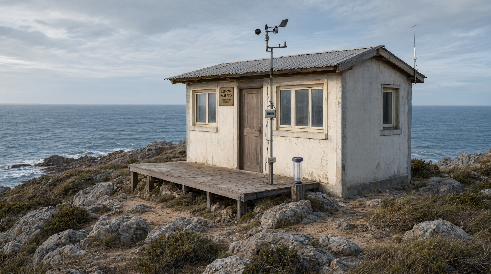

Uma pequena estação de observação

A estação foi construída em uma área próxima ao litoral para
facilitar a observação das condições naturais da região.
Em seu espaço são realizados registros do estado do mar, da direção
dos ventos, das condições do tempo e das mudanças percebidas na
paisagem ao longo do dia.
A estrutura é simples e funcional, permitindo que os observadores
acompanhem a costa e mantenham um registro contínuo das informações
coletadas.